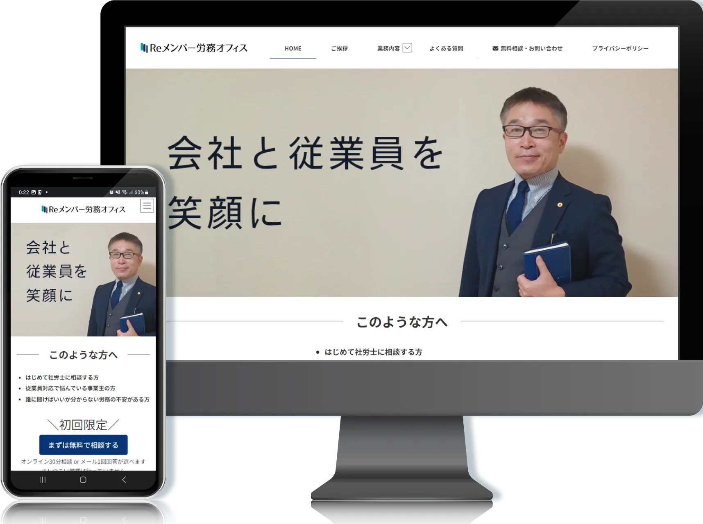
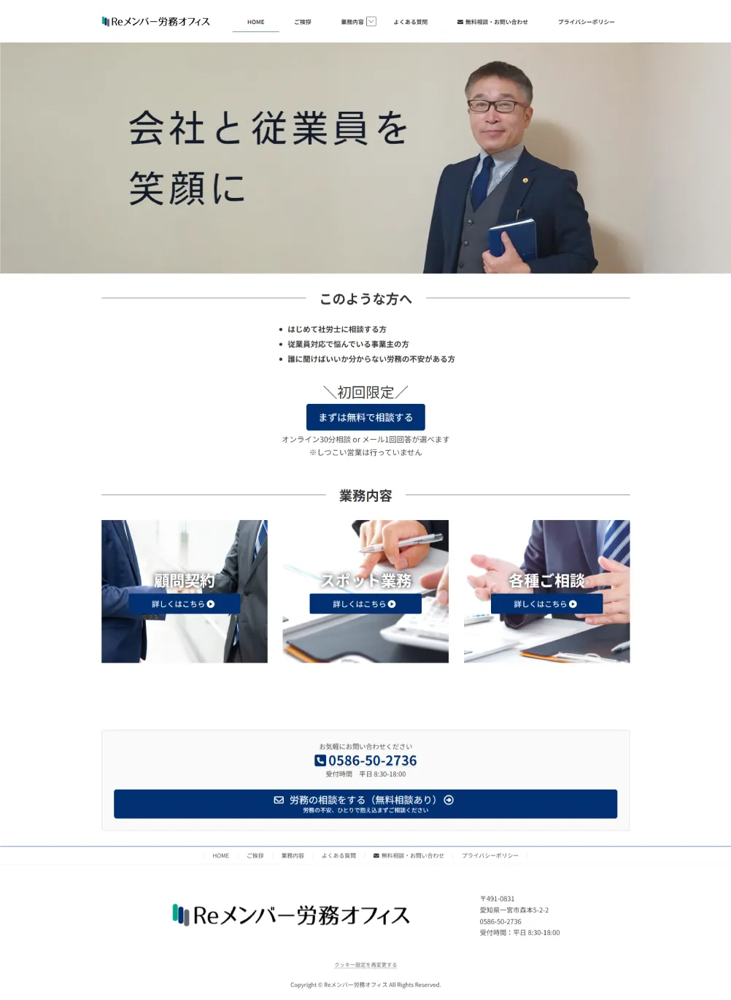
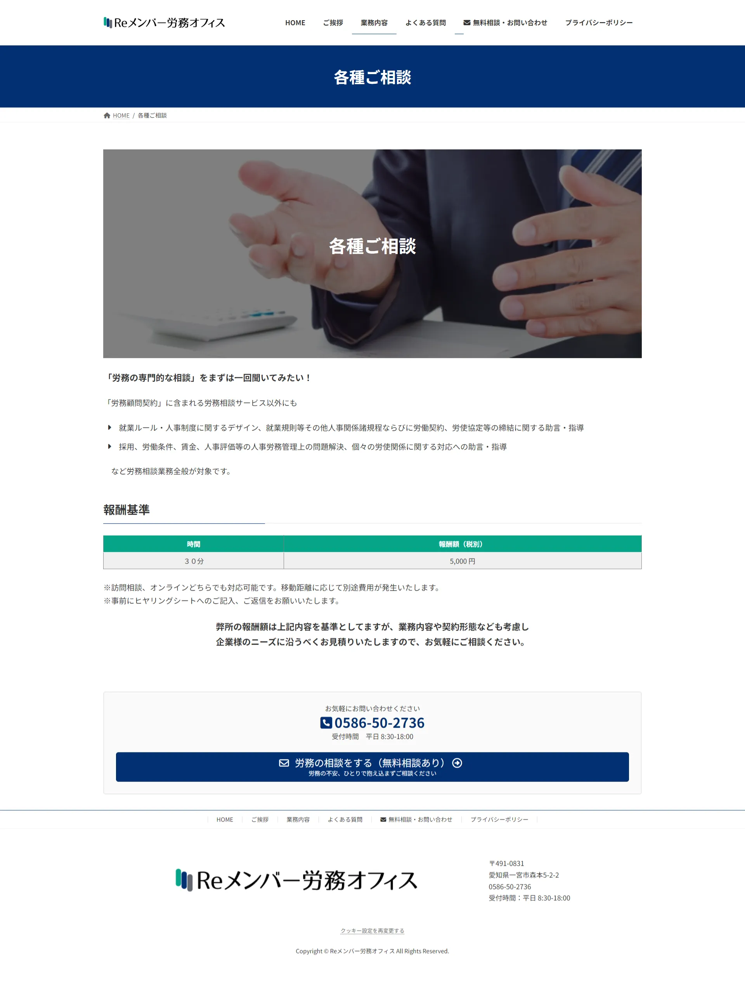
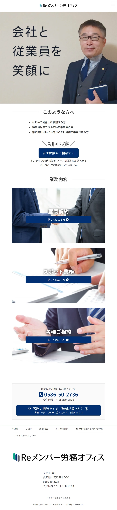
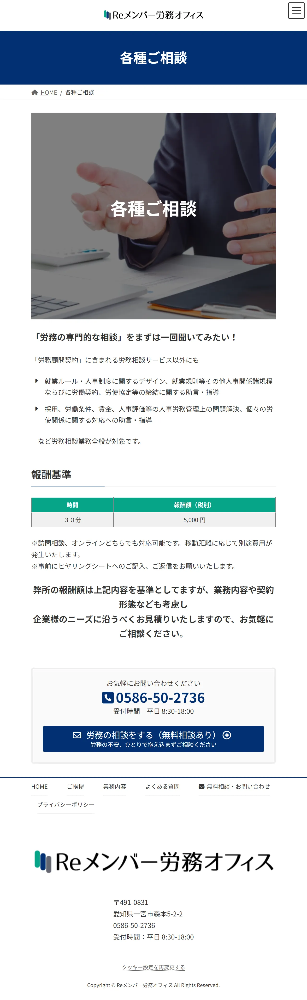

目的：問い合わせ増加・顧問契約獲得
ターゲット：従業員10〜50名の中小企業
課題：労務に関する専門性が高く、サービス内容が分かりづらいため、相談への心理的ハードルが高くなりやすい点
工夫：初めて利用する企業でも安心して閲覧できるよう、情報の区切りや余白を意識し、全体の構成を整理。
また、各サービス内容が把握しやすいよう、セクションごとに情報を分けて配置し、視覚的に理解しやすいレイアウトを意識しました。
さらに、検討段階のユーザーがスムーズに行動できるよう、各セクションに問い合わせ導線を配置し、自然に相談へつながる流れを意識しました。
担当範囲：ワイヤーフレーム / デザイン / コーディング
制作期間：4～5週間
URL：https://re-member-roum.jp/



